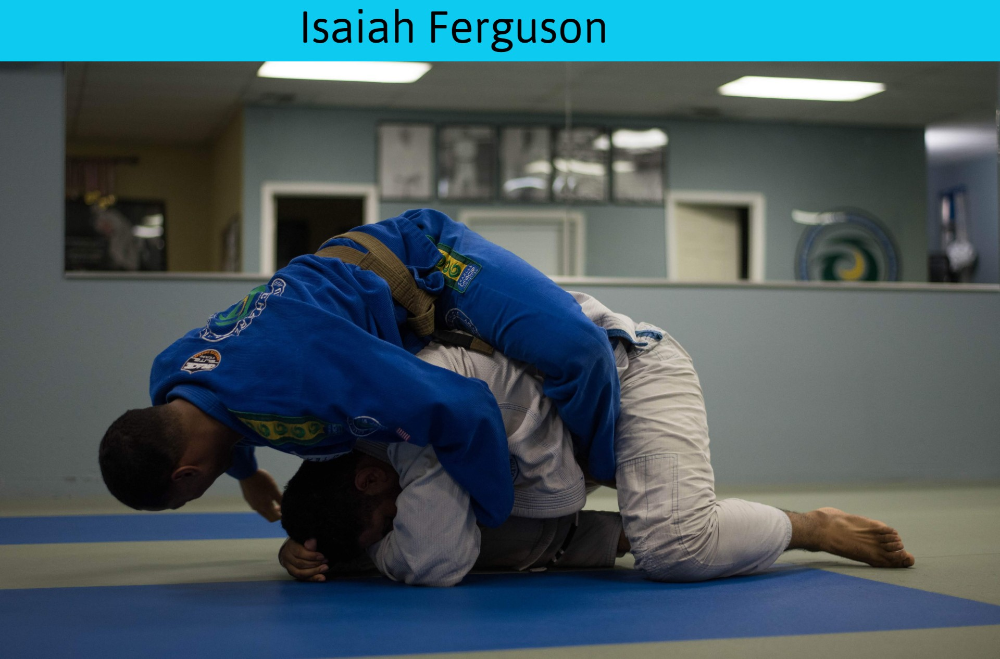

Our Top Ten Favorite...

Bodybuilding is the use of progressive resistance exercise to control and develop one's muscles (muscle building) by muscle hypertrophy for aesthetic purposes. It is distinct from similar activities such as powerlifting because it focuses on physical appearance instead of strength. An individual who engages in this activity is referred to as a bodybuilder.

BJJ is a self-defence martial art and combat sport based on grappling, ground fighting (ne-waza) and submission holds. BJJ focuses on the skill of taking an opponent to the ground, controlling one's opponent, gaining a dominant position, and using a number of techniques to force them into submission via joint locks or chokeholds.